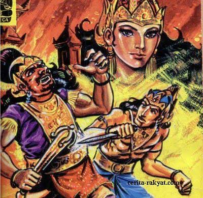

Sejarah Banyuwangi

Daerah yang berbatasan langsung dengan Selat Bali ini memiliki bentang alam yang begitu indah dan menjadi
daya tarik wisatanya. Selain itu, Banyuwangi dikenal memiliki banyak julukan, mulai dari Bumi
Blambangan, Kota Osing, hingga Kota Santet. Julukan Bumi Blambangan sendiri dapat ditelusuri dari
sejarah Kota Banyuwangi pada masa kerajaan. Banyuwangi sendiri memiliki sejarah panjang yang tak bisa
terlepas dari Kerajaan Blambangan. Dilansir dari "Banyuwangi dalam Mozaik 2", yang disusun Komunitas
Pecinta Sejarah Blambangan, Banyuwangi dulunya berada dalam wilayah kekuasaan Kerajaan Blambangan.
Blambangan disebut sebagai kerajaan yang terletak di ujung timur Pulau Jawa. Wilayah ini awalnya
tercatat sebagai salah satu provinsi di masa Kerajaan Majapahit.
Minak Jinggo

Minak Jinggo merupakan salah satu tokoh yang mengisi perjalanan sejarah Kerajaan Majapahit. Minak Jinggo
dikisahkan telah Majapahit karena sayembara yang diselenggarakan oleh Ratu Ayu Kencana Wungu. Namun,
Ratu Ayu menolak menikah dengan Minak Jinggo dan mengingkari janji dalam sayembara tersebut. Sosok Minak
Jinggo paling panjang diurai dalam Serat Damarwulan. Dalam sebuah penelitian yang dikerjakan Hervina
Nurullita dan Yuli Kartika Efendi dalam buku "Minak Jinggo Antara Stigma dan Konstruksi Identitas",
diuraikan bagaimana sosok Minak Jinggo hingga kini lekat dengan stigma negatif. Menurut penelitian
Hervina dan Yuli, nama Minak Jinggo berkait dengan asal-usul kesenian Damarwulan. Juga bagaimana
akhirnya kisah tersebut sampai ke Banyuwangi dengan nama kesenian Janger. Hubungan antara Minak Jinggo,
Damarwulan, dan Majapahit, menjadi simpang siur sebab catatan mengenai dua tokoh ini muncul di kala
rentan. Yaitu pada masa Mataram mengalami konflik dengan Blambangan pada sekitar abad 18.